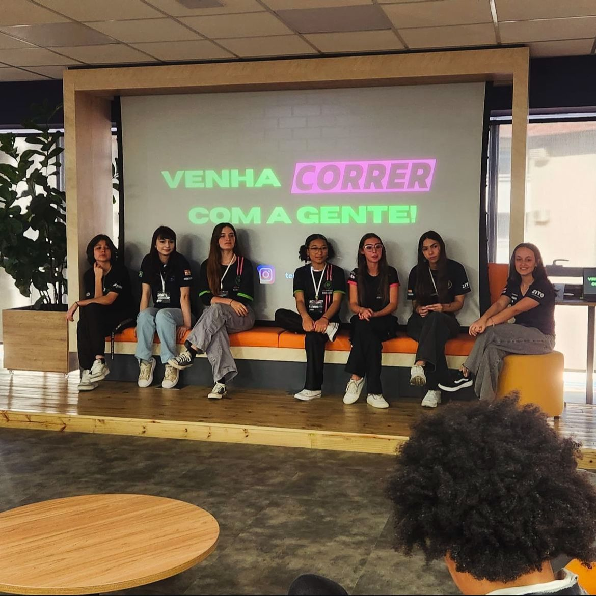
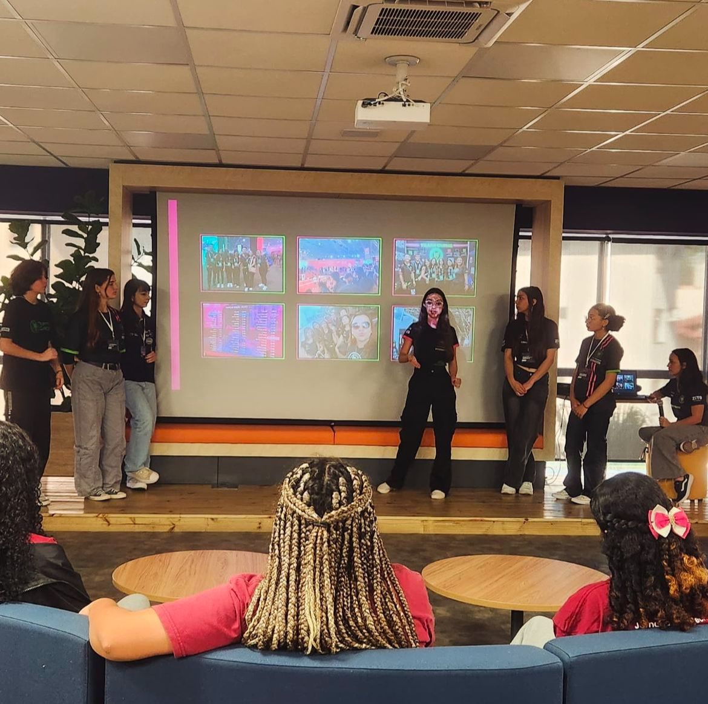
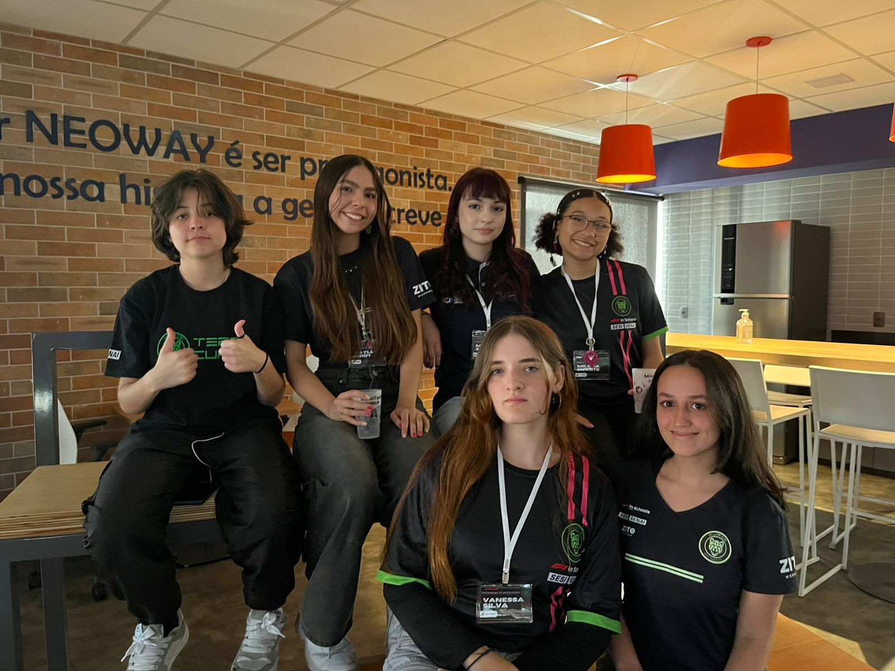
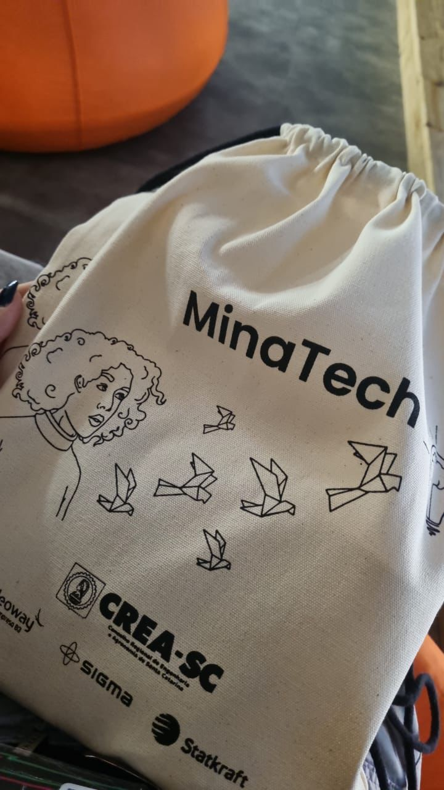

Participar de voluntariados é transformar tempo e dedicação em impacto real na vida de outras pessoas.




Minatech é um programa educativo, totalmente gratuito, organizado e executado pelas ONGs Corali e Engenheiros Sem Fronteiras. O programa visa despertar o interesse de jovens de escolas públicas pelas áreas de engenharia e tecnologia. É voltado para o público de 13 a 18 anos ou para quem ainda está em fase de escolha profissional. No Minatech, estivemos presentes para compartilhar conhecimentos sobre o funcionamento da Team Curie, mostrando que nosso time era composto por mulheres na engenharia e que essa área é um ótimo caminho a ser seguido.
No Jurerê Open, fizemos um trabalho voluntário no qual tivemos dois espaços: um de máquinas 3D e outro sobre a Curie.Na área de máquinas 3D, deixamos o espaço aberto para todos que quisessem participar e demos aulas para crianças e adolescentes sobre como usar uma máquina 3D e como criar seu próprio projeto. Quando terminavam, ensinávamos como imprimir o modelo desenvolvido por eles, transformando criatividade em realidade e permitindo que levassem sua criação para casa.
Novos Caminhos está, desde 2013, transformando a realidade de crianças e adolescentes dos serviços de acolhimento para que alcancem uma vida digna e autônoma. Nosso papel nessa trajetória foi ministrar aulas sobre diversos assuntos, entre eles marketing, educação financeira e modelagem 3D. Nessas atividades, explicávamos o conteúdo e propúnhamos tarefas para que eles pudessem visualizar o próprio trabalho diante deles, transformando ideias em algo físico. Foi maravilhoso ver crianças e adolescentes engajados em nossas aulas, buscando aprender cada vez mais e, quem sabe, seguir futuramente em alguma dessas áreas.